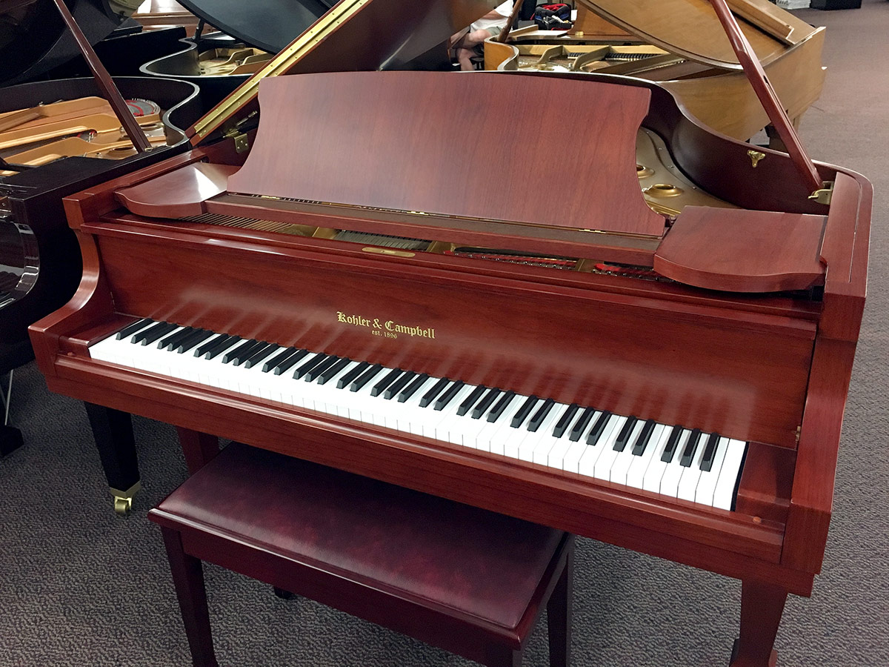
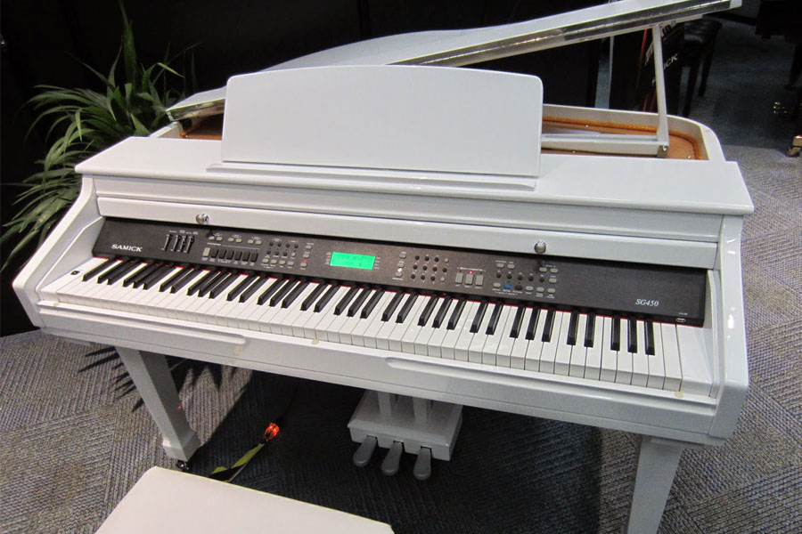
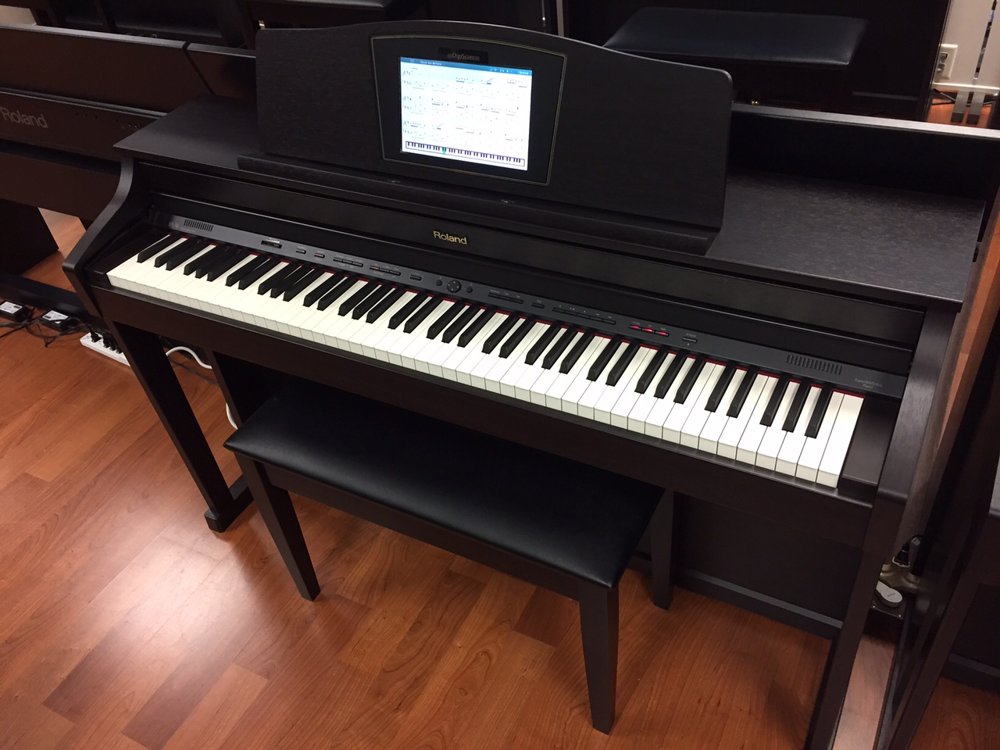

| Photo | Description | price |
|---|---|---|
|  | The Rhode Piano is an electro-mechanical piano,invented by herold Rhodes during the fifties and later manufactured in a number of models. | 1400 |
|  | The wurlitzer electric piano is an electro-mechanical piano created by the Rudolph wurlitzer company of mississipi, the wurlitzer company itself never called the intrument an "Electronic Piano" and using this as a trademark throughout the production of the instrument.It employs a piano-like keyboard with hammer that hit small metal tines, amplified by the electronmagnitic pickups. | 1600 |
|  | A clavient is an electronically amplified clavichard manufactured by the hahner company. Each key uses a rubber tip to perform a hammer on a string. Its distinctive bright staccato sound is often compared to that of an electric guiter various model were produced over the years. | 1200 |